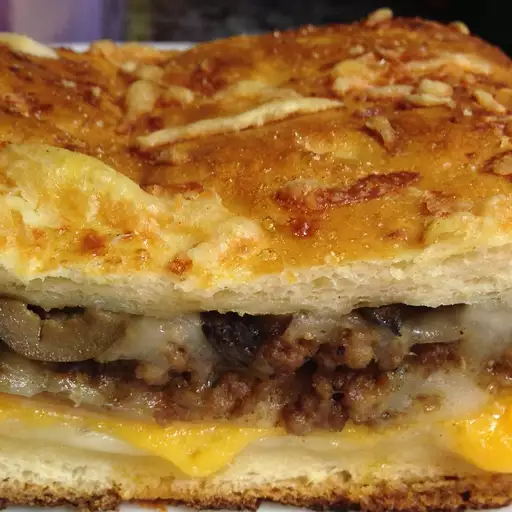

Stromboli

Description
My stromboli recipe uses premade pizza dough. Kids and adults love this
pizza creation. I always have leftover sauce, so I serve it the next day
over hot spaghetti.
Ingredients
- 1 (10 ounce) package pizza crust dough
- ½ pound lean ground beef
- 1 (14 ounce) jar pizza sauce
- 1 cup cooked ham, diced
- 1 medium green bell pepper, chopped
- 1 medium red onion, finely chopped
- 1 (4.5 ounce) can mushrooms, drained
- 1 (8 ounce) package sliced pepperoni sausage
- 1 cup shredded mozzarella cheese
- ¼ cup butter, melted